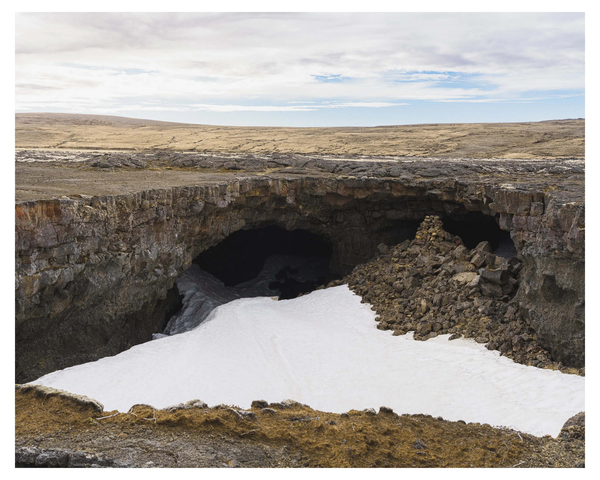

You feel the passage of time more keenly in Iceland. Elsewhere, in North America or Europe, the seasons can slide into one another. A long spring turns into summer before you know, and late falls fade away into mercifully short winters.
In the medieval Icelandic calendar, the year only had two seasons: summer and winter. And while we may talk about spring and fall for convenience (or out of hope - or nostalgia), this is still largely the case. The year is clearly split in two. I find that it makes summer all the more precious. One feels a greater pressure to seize the summer and have adventures while one can. A summer of bad weather can make it feel like an entire year of one's life was somehow wasted (July 2026 was the wettest ever July on record). Nevertheless, Iceland in summer is one of the most beautiful places on earth.
An old friend
An old friend from the US, whom I met in grad school, came to visit me this summer. It was still early in the season, only late May, and far too early in the summer to go camping. So we rented a summer cabin in Húsafell, a summer cabin community in West Iceland.
I have always known this area to be quite historic. Indeed, one of the major reasons we stayed in this region was its connections to the travels of William Morris, a 19th century artist and intellectual, and early traveler to Iceland. Though I've lived in Iceland for some 6 years now, there are many places I haven't seen, such as Snorrastofa at Reykholt and the Settlement Center in Borgarnes. These are smaller, rural museums. But despite my expectation of kitschy charm, both were actually very interesting and worth a visit. Snorrastofa especially.
In addition to exploring the local history of the area, we also went on day hikes in West Iceand. The weather was for the most part, grim. One trip that stood out was to the cave system known as Surtshellir. This cave was visited by William Morris on his travels to Iceland, and I suspect his description of it in his travel journal may have had some influence on Tolkien (Tolkien was aware of Morris, and had many of his books). Still in late May, these caves were packed with ice and snow, and we couldn't explore them in depth, only look at them from above. At this time of year, the mountain road out to Surtshellir was also closed, so we parked the car at the main road and simply walked. Reading up on the archaeology of the site afterwards, it seems plausible that this cave system was not actually named after the Norse fire giant Surt, but that Surt may actually have been named after this place. Read this article if you're interested in that kind of thing.

Sátan metal festival
After exploring West Iceland, we also went to Sátan, a metal music festival hosted in Stykkishólmur, a fishing village on the Snæfellsnes peninsula. It was a solid lineup this year, though the weather was wretched. There were off-venue performances in a tent in the parking lot. These were some of the best performances of the festival (isn't it always like that?). Particularly good were Skurðgoð - local kids who can't be more than 18 who play extremely raw and aggressive black metal.
I also saw - for the first time in my life - Sólstafir. This is something of a guilty admission being a metal fan living in Iceland, as they are perhaps the Icelandic metal band. For whatever reason, I have never actually listened to them much, though they've always been on my radar. But it was an incredible performance, and I've found myself listening to them all this summer. They were very active in the 2000's, and I think it would be too simple to say that they were simply influenced by Sigur Rós. The two bands likely cross-pollinated, with Sólstafir picking up the best from metal-adjacent genres. Fields of the Nephilim and Neurosis come to mind here. Driving around the countryside in the rainy summer, I've been playing them nearly non-stop.
Hiking in East Iceland
The highlight of the summer was a 4-day hike in Iceland on a trail known as Víknaslóðir. The path we took was about 70km, starting from Borgarfjörður Eystri and heading south to Seyðisfjörður. We are lucky enough to have a friend in Seyðisfjörður, who was kind enough to drive us to Borgarfjörður. This allowed us to leave our car at the trailhead in Seyðisfjörður, which was a very welcome sight on the last day of the hike.
The weather was quite nice for the most part. We had nearly 20 degrees the first day. It was only on the last night that we had wind and rain. It was actually quite hard to sleep then, as the wind was blowing so hard against the tent. The final day of the hike was from Loðmundarfjörður to Seyðisfjörður. This was actually a rather rough leg, and the descent down to Seyðisfjörður was a little intense. The trail cabins were also quite nice along this hike. We took the tent and stayed at campgrounds, but all of the cabins were well-equipped with kitchens, and we were able to take hot showers at every campground!
Books and movies
I haven't read nearly as much I as I would have liked this summer. Much of my time has been spent on family, work, and learning new skills. I've been slowly working through one book this summer: my Icelandic translation of the Hobbit. It's actually excellent language practice, as I'm so familiar with the story. I sometimes feel ashamed to still be reading children's books in Icelandic, but I think this is a feeling to be overcome. There is no shame in learning another language, and the Hobbit is such a cozy and familiar story. It's proven to be an excellent summer read, especially when I took it along for a hike.
I also managed to watch some good movies this summer. In no particular order, some of the most notable were:
Written by Erik Pomrenke. Have thoughts? Get in touch.